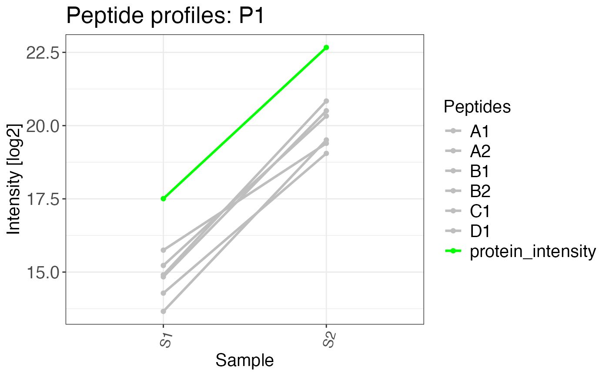

Creates a plot of peptide abundances across samples. This is helpful to investigate effects of peptide and protein abundance changes in different samples and conditions.
peptide_profile_plot( data, sample, peptide, intensity_log2, grouping, targets, protein_abundance_plot = FALSE, interactive = FALSE, export = FALSE, export_name = "peptide_profile_plots" )
| data | a data frame that contains at least the input variables. |
|---|---|
| sample | a character column in the |
| peptide | a character column in the |
| intensity_log2 | a numeric column in the |
| grouping | a character column in the |
| targets | a character vector that specifies elements of the grouping column which should
be plotted. This can also be |
| protein_abundance_plot | a logical value. If the input for this plot comes directly from
|
| interactive | a logical value that indicates whether the plot should be interactive (default is FALSE). If this is TRUE only one target can be supplied to the function. Interactive plots cannot be exported either. |
| export | a logical value that indicates if plots should be exported as PDF. The output
directory will be the current working directory. The name of the file can be chosen using the
|
| export_name | A character vector that provides the name of the exported file if
|
A list of peptide profile plots.
# Create example data data <- data.frame( sample = c( rep("S1", 6), rep("S2", 6), rep("S1", 2), rep("S2", 2) ), protein_id = c( rep("P1", 12), rep("P2", 4) ), precursor = c( rep(c("A1", "A2", "B1", "B2", "C1", "D1"), 2), rep(c("E1", "F1"), 2) ), peptide = c( rep(c("A", "A", "B", "B", "C", "D"), 2), rep(c("E", "F"), 2) ), intensity = c( rnorm(n = 6, mean = 15, sd = 2), rnorm(n = 6, mean = 21, sd = 1), rnorm(n = 2, mean = 15, sd = 1), rnorm(n = 2, mean = 15, sd = 2) ) ) # Calculate protein abundances and retain precursor # abundances that can be used in a peptide profile plot complete_abundances <- calculate_protein_abundance( data, sample = sample, protein_id = protein_id, precursor = precursor, peptide = peptide, intensity_log2 = intensity, method = "iq", for_plot = TRUE ) # Plot protein abundance profile # protein_abundance_plot can be set to # FALSE to to also colour precursors peptide_profile_plot( data = complete_abundances, sample = sample, peptide = precursor, intensity_log2 = intensity, grouping = protein_id, targets = c("P1"), protein_abundance_plot = TRUE )#> $P1#>